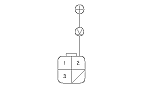
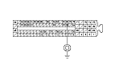
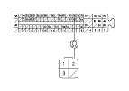

Alternator Control Circuit Troubleshooting
Connect the Honda Diagnostic System (HDS) to the data link connector (DLC).
Turn the ignition switch ON (II).
Make sure the HDS communicates with the vehicle and the engine control module (ECM). If it doesn't communicate,
troubleshoot the DLC circuit.
Check for DTCs.
If a DTC is present, diagnose and repair the cause before continuing with this test.
Turn the ignition switch OFF. Disconnect the alternator 4P connector from the alternator.
Start the engine, and turn on the headlights to high beam.
Measure the voltage between alternator 4P connector terminal No. 2 and the positive terminal of the battery.
Is there 1 V or less?
YES
-
Go to
Step 11
.
NO
-
Go to
Step 8
.
Jump the SCS line with the HDS, then turn the ignition switch OFF.
NOTE: This step must be done to protect the ECM from damage.
Disconnect ECM connector No. 1 (96P).

Check for continuity between ECM connector No. 1 terminal No. 80 and body ground.
Is there continuity?
YES
-
Repair short in the wire between the alternator and ECM.■
NO
-
Update the ECM if it does not have the latest software,
or
substitute a known-good ECM,
then recheck. If the symptom/indication goes away with a known-good ECM,
replace the original ECM.
■
Jump the SCS line with the HDS, then turn the ignition switch OFF.
NOTE: This step must be done to protect the ECM for damage.
Disconnect ECM connector No. 1 (96P).

Check for continuity between ECM connector No. 1 terminal No. 80 and alternator 4P connector terminal No. 2.
Is there continuity?
YES
-
Replace the alternator,
or
repair the alternator.
■
NO
-
Repair open in the wire between the alternator and ECM.■
